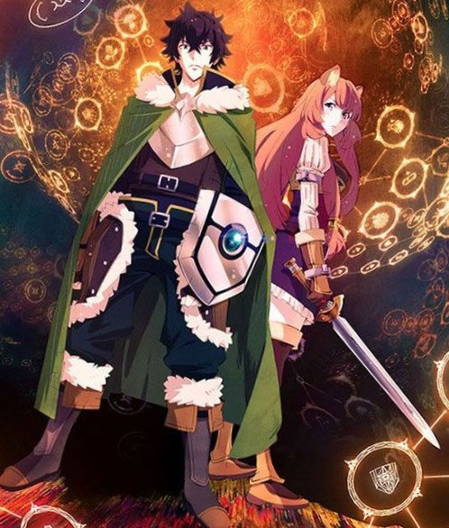

|

|
Introduction
Naofumi iwatani a été invoqué dans un autre monde avec trois autre garçon originaire du Japons parallèles pour devenir les "Quatre Héros Légendaires",ou "Quatre Saints ancestraux" dans ce monde. Chacun des heros était équiper de son propre équipement légendaire dès leur invocation: Naofumi a reçu "Bouclier légendaire",seul équipement défensifdes quatre, tandis que les ont respectivement reçu une arme offensive.
En raison du manque de charisme et d'expérience de Naofumi, il s'est retrouvé avec un seul coéquipier pour l'accompagner, une jeune femme séduisante, tandis que les autres en reçurent plusieurs : malheureusement, lors du deuxième jour Naofumi est trahi, dépouillé et faussement accusé par ladite coéquipière.
Tombé en disgrâce et persécuté par tout le monde dans le royaume, du roi aux paysans, les pensées de Naofumi ne sont plus emplies que de vengeance et de haine. Ainsi commence son périple dans ce monde où il devra progresser seul…
Les Personnage
|